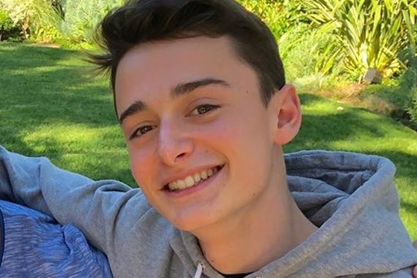

A História
Conheci a série assim que lançou, porque foi um "abafo" por uma criança(eleven) ter raspado a cabeça para a sua personagem, olhei a série assim que estreiou mas não gostei, entre o final de 2017 e o início de 2018 uma amiga falou que tinha assistido uma série maravilhosa e que eu precisava assitir. Bom, eu assisti e dessa vez não consegui parar, fiquei viciada na séria, me apaixonei pelo os personagens e atores e atrizes.
Sempre gostei de tudo que tivesse haver com ficção, como Harry Potter, Narnia, Avatar entre outros, porém Stranger things foi muito mais que isso, a série me envolve de um jeito que é inexplicavél, o meu amor por todo esse conjunto é uma incógnita até mesmo para mim, meu pai dizia que era só mais uma fase quando eu tinha 12 anos e gaora estou me encaminhando para os 16 e o sentimento inexplicavél é o mesmo
Logo de cara me interessei pelo o ator Noah Schnapp e o seu personagem Will Byers, já de início se tornou um sonho conhecer todos ele mas o Noah em específico era a minha meta principal,como eu disse, é inexplicavél o sentimento, porém é muito dificil ou pelo menos era, ter eventos com pessoas famosas de fora do Brasil, geralmente eles não vem. Para a minh sorte em Março de 2018 foi anunciado que um evento chamado Stranger Con acontecereia nas cidades de São Paulo e Rio de Janeiro em Outubro do mesmo ano, eu estava muito animada e fiz altas promessas para o meu pai me levar, essa era a minha chance, "A" chance, mas pora o fim das minhas expectativas os ingressos esgotaram muito rápido e meu pai falou que era imposível fazer "toda essa mão"

A melhor surpresa
Meu pai chegou em mim e me entregou um cartãozinho que era o ingresso do evento, eu fiquei extremamente, absurdamente, lisongeadamente feliz. O tempo passou e cehgou Outubro e 14 dias antes do evento ele foi adiado para 21 de Janeiro de 2019 e eu fiquei sem chão, fui igual para São Paulo pois as passagens já estavam compradas, aproveitei igual mas triste por não estar no evento
2019
e as melhores mudanças
Ao passar do tempo eu me afastei da série e fiquei assutada de ser só uma fase porque tudo na vida passa, ou não, depende muito dos princípios e de como as coisas chegaram até ti, dia 17 de Janeiro de 2019 eu acordei com a notícia do falecimento da minha Biza o que me deixou muito "avoada", logo a tarde as malas estavam meio prontas e eu fiquei muito mal e tive que ir tomar soro no hospital, 2018 e 2019 eu tinha muitos problemas de saúdes devido aos problems psicológicos que começaram a ser mais evidentes e stranger things todos eles me salvaram... continuando o dia louco, logo após de voltar do hospital eu não queria mis ir mas o meu pai falou que não tinha outra opção, eu super entendo ele, imagina tudo que foi necessário para realizar esse meu sonho e do nada eu não querer ir mais, sem nexo.
Graças a Deus meu pai insistiu para que rolasse a viagem, por mais que eu não estivesse mais interessada fui para aproveitar mas quando cehgou o dia do evento de fato, dia 21 de janeiro quando eu tive contato com outras pessoas que passaram por coisas que eu passei e pessoas que enetendiam tudo que eue sentia por mais que um dia antes eu não estivsse mais querendo ir, esse contato fez todos, absolutamente todos os sentimentos voltarem
Eu fiquei muito atrás não sabia nada de inglês, mas vi ele de pertinho e tenho alguns registros desse momento, ele foi super fofo mas foi super rapido o meet & greet porem não importava, eu tinha realizado o meu sonho. Meu pai depois de ver como isso tudo me melhorou como pesso no geral depois ed muito insistir hahah fomos novamente em 2020


O resultado disso
- Eu criei uma conta em inglês e me dediquei a ele todos os dias e assim aprendi o inglês que tenho hoje
- Eu entrei para um curso de Inglês por me interssra mais no mundo em geral
- Fiz amizades do mundo inteiro que até hoje tenho contato, pessoas que me conheceram e se interessram por quem eu sou e pelo o meu amor pelo o ator e pela a série
- fui notada algumas vezes pelo o Noah através das redes sociais
2020
a segunda chance
Agora dessa vez eu estava contando os mêse, dias, minutos e segundos para o grande dia, dessa vez eu tinha amigas que estava ansiosa para conhecê-las, até me arrumei para ir, me preprarei com mochila e tudo, estava prontissima. o evento foi maravilhoso, e agora eu fiquei pertinho dele, e quando conversamos no meet & greet foi invrível, ele tem um olhar carismático e encantador, olha realmente hahah. Ele pegou um objeto que estava na minha mão achando que era pra ele e depois eu disse qu era meu e foi bem engraçado essa confusão. Na hora da foto eu cheguei super nervosa e só abracei ele e pensei " meu deus nao pode ser a mesma posição do ano passaod" então eu levantei a mão e ele encaixou a mão dele. Graças ao senhor deu certo e ficou muto boa a foto porque algumas fotos deram muito erradas por n ter muito tempo para explicar ao noah o que fazer HAHAHAH